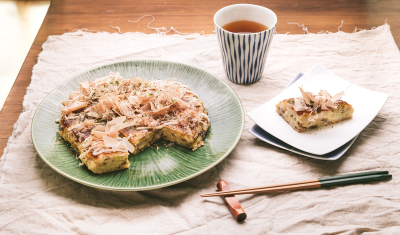

お好み焼き

材料 2人分
- キャベツ
- 1/4個
- 豚バラ薄切り肉
- 130g
- ⚫ 卵
- 1個
- ⚫ 小麦粉
- 30g
- ⚫ 水
- 100ml
- 中濃スース
- 適量
- マヨネーズ
- 適量
- からし
- 適量
- かつお節
- 適量
- 青のり
- 適量
作り方
1
キャベツを千切りにします。
2
ボウルに千切りキャベツと⚫を入れて、粉っぽさがなくなるまで混ぜ合わせます。
3
中火に熱したフライパンにサラダ油をひきます。
4
2を全量流し込み、その上に豚バラ薄切り肉を並べ蓋をします。
焦げないように注意しながらカリッとするまで焼きます。
5
ひっくり返したらまた蓋をして3分焼きます。
竹串などを刺して粉が付いてこなければ焼き上がりの目安です。
6
からしとマヨネーズを合わせます。
7
お好みのトッピングをして完成です。